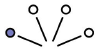
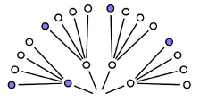
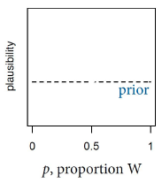
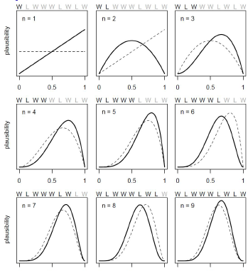
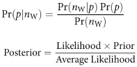
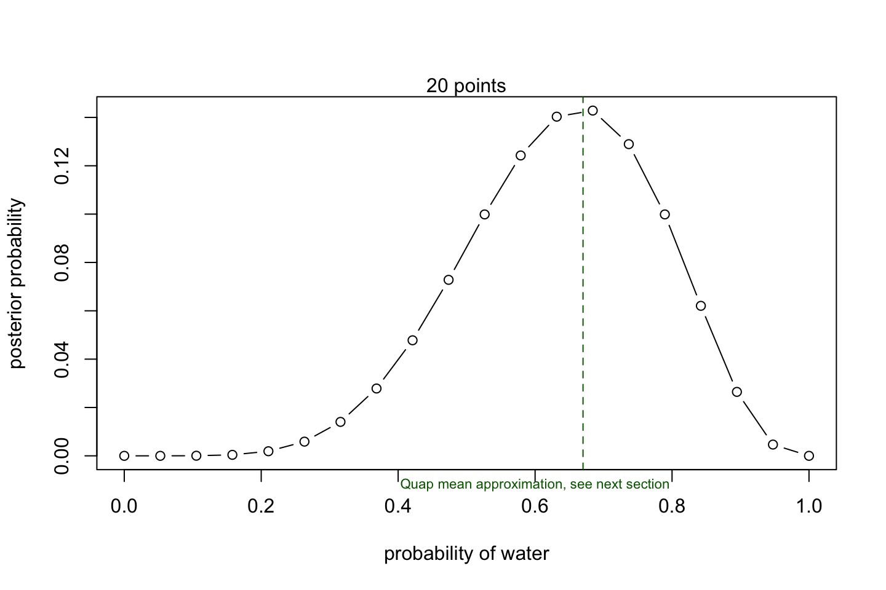
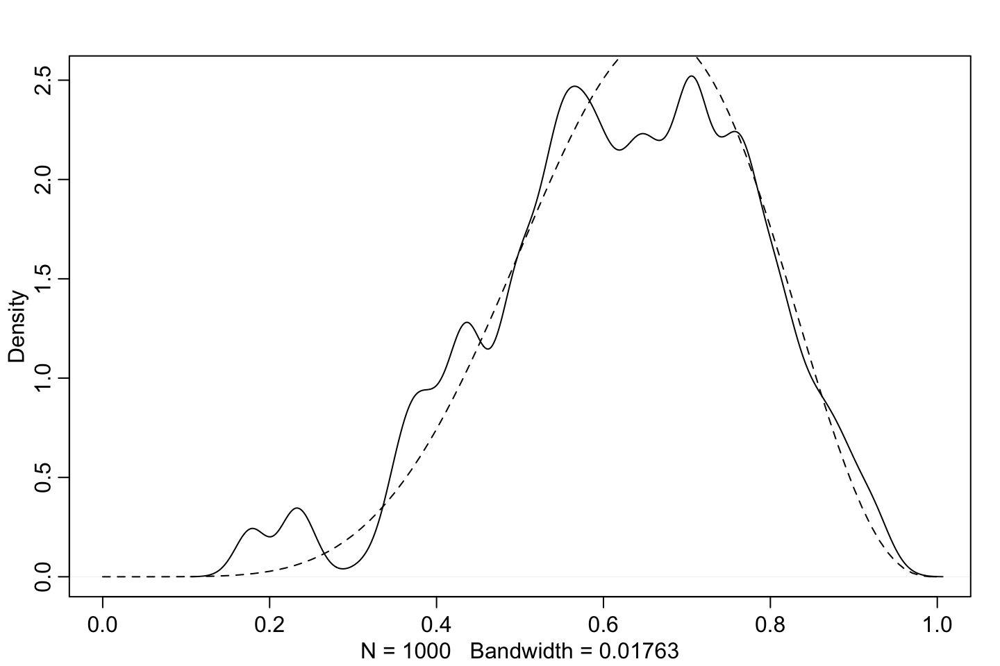
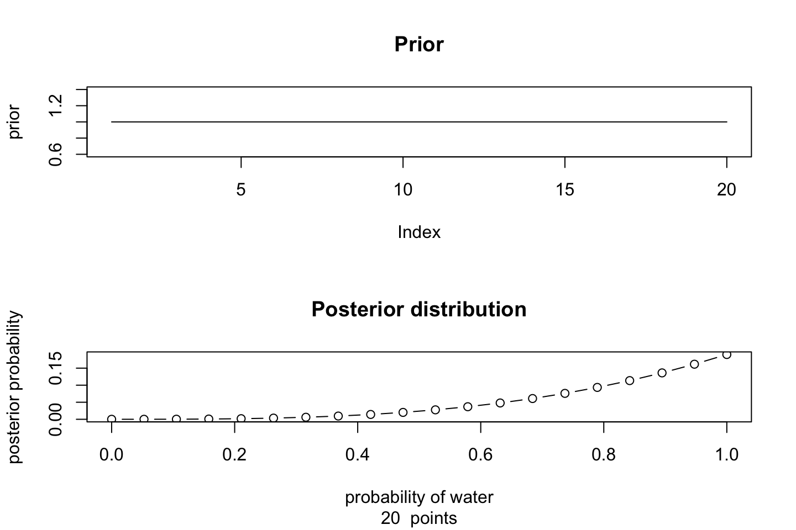
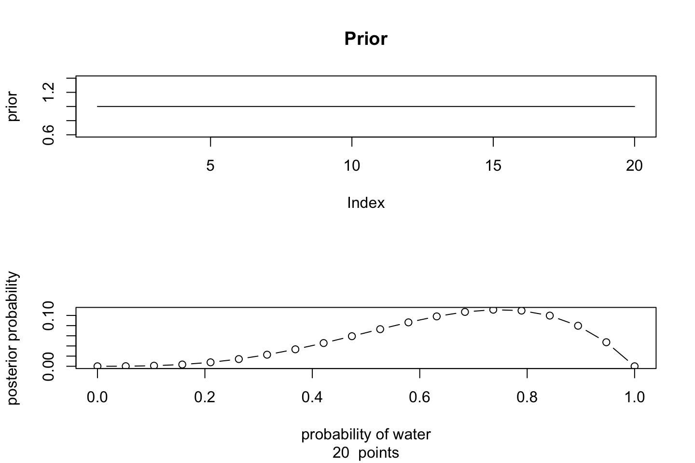
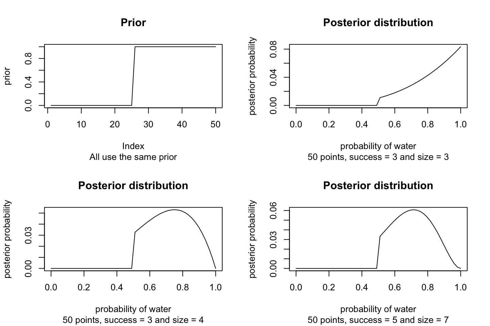

2 Chapter 2 - Small worlds and Large Worlds
The small world is the world of the golems assumptions. Bayesian golems are optimal, in the small world.
The large world is the real world. No guarantee of optimality for any kind of golem.
Terminoligy:
- Under drawing of replacement we are able to write out the possible contents
- Garden of Forking Data is the possible outcomes that we will see.
- Conjecture = the assumption of what the different observations looks like (or is constructed). e.g, we have a bag of 4 marbles, we may assume that there is 1 blue and 3 whites.
In the following we are able to see what possible outcomes we expect to have.

This can then be extended by a second draw:

Now we see that there are 16 different paths, given the assumptions that we made (1 blue and 3 white). Now this expands exponentially, hence by including a third draw we would have 64 different outcomes.
Now what?
One should draw the whole garden and find the paths that can lead to the way of producing the desired output.
As the number of paths increase exponentially, we quickly start to work with large counts. This is the reason, that Bayes Theorem got into this approach, as we are able to compress the counts as relative counts.
We can do this with R. Lets say that we have 3, 8 and 9 ways of producing three different compositions of a bag of marbles, then we say:
ways = c(3,8,9) #notice that the counts are found given the conjecture
ways/sum(ways)## [1] 0.15 0.40 0.45Hence we see that the relative plausibility for 3 blue and 1 white is 45%, given the conjecture (the assumption of the composition of the bag)
Building a model
We want to:
- Design the model (data story)
- Condition on the data (update)
- Evaluate the model (critique)
See also example with tossing globes in the following sections.
priors
let us say that we have a prior with absolutely no information (like traditional statistics), we do not know if it is 100% or 0% water, hence the prior looks the following:

Now we introduce more information.

Notice that we consecutively update priors. Prior distribution = striped and posterior distribution = solid line.
We see that after the first observation (top left), there is 0 probability of 0% water, as we now know that there is water. Now we can look at the next observation, we see that it is land, now the posterior distribution is essentially centered at 0.
Now lets look at a third observation, we see that the posterior is skewed to the right of the prior.
We see that the more information we see, the taller (the more certain) will the distributions be.
Key takeaway: the current posterior distribution will be the prior distribution for the following observation.
How can one manipulate the process? We see that you can change how much the prior is updated, hence if you are certain about a prior distribution, then you can make it more difficult for the model to update this. Also we see from the example above, that the more information that is revealed, the less does the prior matter.
2.1 Models and Estimation
Introduction: We see that the Bayesian Data Analysis takes the approach of having a prior probability (the probability of an event happening while ignoring the data we have at hand). Then we compute posterior probabilities as we introduce data.
The posterior probabilities can be seen as a relative count of how many ways a given outcome can be replicated out of the total.
The Bayesian Data Analysis can essentially be fitted with three different models:
1. Grid approximation: Good with few parameters
2. Quadratic approximation: Good with a moderate amount of parameters. Also, this is an approximate and is rarely applied.
3. Markov Chain Monte Carlo: Outperforms other models in in a high parameter scenario
4. (Analytical approach): this is often impossible. Examples will be shown during lectures, but will not be used.
Remember that the Bayesian Estimate that we end up with, will always be a distribution and not a point estimate!!
This is a section about models and estimation, based on chapter 1 - 3 from the book.
Some terminology:
Prior Distribution: This is the distribution of a prior event. E.g., lets say that we toss a coin. There are two sides hence we expect to see a normal bell curve centered in 50%.
Posterior Distribution: This is basically just the prior distribution after we introduce observations. Lets say that we end up getting many consecutive heads, it implies that the probability of an outcome is actually skewed, e.g., the coin may be more heavy on one side. Hence we will see that the posterior distribution will not be centered around 50% but move to one of the sides. Therefore, you can model with (test different) prior probabilities. But the posterior probability is found after introducing data (observations/samples).
Likelihood: This is just the relative number of ways that a given scenario can be produced. E.g., if you have discrete data, drawing marbles then the likelihood of some sequence is just the relative count of how you can construct such sequence.
Prior probability = prior plausibility
Updated plausibility = posterior probability
The posterior is calculated as the following

This is to be interpreted as:
Average likelihood = evidens. This is summing over p. hence it ensures that the posterior distribution will sum to 1.
Likelihood = ways to get the data
Prior = prior ways to get the data
Hence one ends up with probability of p given the new data.
Assumptions when making the model
- Data story: Motivate the model by narrating how the data might arise.
- Update: Educate your model by feeding it the data. Basically the distribution for a given outcome is explored observation by observation. The more data we have seen the better should the distributions be.
- Evaluate: All statistical models require supervision, leading possibly to model revision.
#Code 2.2 - finding likelihood
dbinom(x = 6 #No. of 'successes' water in this case
,size=9 #No. of tosses
,prob=0.5 #Probability of a given outcome (succes)
) # = 0.1640625## [1] 0.1640625d for density or distribution. bi for binomial.
We see that the probability of getting 6 water (and 3 land) is 16%. Given that the probability of water is 50%. The 16% is equivilent to the relative number of ways that 6 water and 3 land can be found.
Notes in prior priobabilitieis. We see that oftentimes you only have one prior, and it can for instance be based on already seen data. Although a prior does not have to be based on that, one can test of different priors and see what that leads to.
How to select a prior: In general we can always do better than just everything is equally likely, but notice there is no true prior. This means that a good prior is subjective, therefore, one can test with different priors and see how sensitive the model is to different priors.
2.1.1 Engines / Motors to estimate the models
We are going to apply three different engines to estimate the model.
2.1.1.1 Grid approximation
Here we use a grid of values to compute the likelihood of Water. This is basically just defining a range, and calculating the probabilities for the given value, then we end up being able to plot this.
length = 20
# define grid
p_grid <- seq( from=0 , to=1 , length.out = length )
# define prior
prior <- rep( 1 , length )
# compute likelihood at each value in grid
likelihood <- dbinom(6 ,size=9 ,prob=p_grid )
# compute product of likelihood and prior
unstd.posterior <- likelihood * prior
# standardize the posterior, so it sums to 1
posterior <- unstd.posterior / sum(unstd.posterior)
#Plotting
plot(p_grid
,posterior
,type="b"
,xlab="probability of water"
,ylab="posterior probability" )
mtext( "20 points" )
abline(v = 0.67,lty = 2,col = "darkgreen")
mtext(text = "Quap mean approximation, see next section",side = 1,at = 0.6,col = "darkgreen",cex = 0.7)
So we see that the probability of picking 6 times water peaks around 60% to 70%.
The Grid approximation scales very badly, hence when you have a model with many variables it starts to get cumbersome to estimate. That is the reason that we go to quadratic approximation.
2.1.1.2 Quadratic approximation
The quadratic approximation is basically utilizing Guassian (normal) distribution
library(rethinking)
globe.qa <- quap(
alist(
W ~ dbinom( W+L ,p) , # binomial likelihood
p ~ dunif(0,1) # uniform prior
) ,
data=list(W=6,L=3) )
# display summary of quadratic approximation
precis( globe.qa )
|
|
|
|
We see that the mean is 0.67, hence the highest prior, this level is also inserted in the illustration above, to show that we end up in approximately the same place. Then the standard deviation (sd) is the spread en then the confidence intervals are shown.
2.1.1.3 Markov Chain Monte Carlo
This sections does not yet go in detail with MCMC. Although the key takeaway is that quadratic approximation is also cumbersome and to some extent impossible when you have a lot of parameters. Therefore MCMC can be used instead.
The following is a toy example with the same data:
#R Code 2.8
n_samples <- 1000
p <- rep( NA , n_samples ) #Samples from the posterior distribution
p[1] <- 0.5 #Posterior
W <- 6 #Successes (Water)
L <- 3 #Non successes (Land)
for ( i in 2:n_samples) {
p_new <- rnorm(1, p[i-1], 0.1)
if(p_new < 0) p_new <- abs(p_new)
if(p_new > 1) p_new <- 2 - p_new
q0 <- dbinom(W , W+L , p[i-1] )
q1 <- dbinom(W , W+L , p_new )
p[i] <- ifelse( runif(1) < q1/q0 , p_new , p[i-1] )
}
dens(p , xlim=c(0,1))
curve(dbeta( x , W+1 , L+1 ) , lty=2 , add=TRUE)
2.2 Exercises
2.2.1 2M1
Recall the globe tossing model from the chapter. Compute and plot the grid approximate posterior distribution for each of the following sets of observations. In each case, assume a uniform prior for p.
- W, W, W
- W, W, W, L
- L, W, W, L, W, W, W
They can be calculated using the same piece of code. Although we must change the number of successes and the number of tosses.
length = 20
# define grid
p_grid <- seq( from=0 , to=1 , length.out = length )
# define prior
prior <- rep( 1 , length )
# compute likelihood at each value in grid
likelihood <- dbinom(x = 3
,size=3 #No. of tosses
,prob=p_grid )
# compute product of likelihood and prior
unstd.posterior <- likelihood * prior
# standardize the posterior, so it sums to 1
posterior <- unstd.posterior / sum(unstd.posterior)
#Plotting
par(mfrow = c(2,1))
plot(prior,type = 'l',main = "Prior")
plot(p_grid
,posterior
,type="b"
,xlab="probability of water"
,ylab="posterior probability"
,main = "Posterior distribution"
,sub = paste(length," points")
)
We see that if we only draw water then we get more and more certain that there is only water. If we are to make a new toss. Then we should what we see above will be our new prior. Hence we start with a uniform prior (the stupid prior) and end up with a prior that contain information.
length = 20
# define grid
p_grid <- seq( from=0 , to=1 , length.out = length )
# define prior
prior <- rep( 1 , length )
# compute likelihood at each value in grid
likelihood <- dbinom(x = 3 #No. of successes
,size=4 #No. of tosses
,prob=p_grid )
# compute product of likelihood and prior
unstd.posterior <- likelihood * prior
# standardize the posterior, so it sums to 1
posterior <- unstd.posterior / sum(unstd.posterior)
#Plotting
par(mfrow = c(2,1))
plot(prior,type = 'l',main = "Prior")
plot(p_grid
,posterior
,type="b"
,xlab="probability of water"
,ylab="posterior probability"
,sub = paste(length," points")
)
length = 20
# define grid
p_grid <- seq( from=0 , to=1 , length.out = length )
# define prior
prior <- rep( 1 , length )
# compute likelihood at each value in grid
likelihood <- dbinom(x = 5 #No. of successes
,size = 7 #No. of tosses
,prob=p_grid )
# compute product of likelihood and prior
unstd.posterior <- likelihood * prior
# standardize the posterior, so it sums to 1
posterior <- unstd.posterior / sum(unstd.posterior)
#Plotting
par(mfrow = c(2,1))
plot(prior,type = 'l',main = "Prior")
plot(p_grid
,posterior
,type="b"
,xlab="probability of water"
,ylab="posterior probability"
,sub = paste(length," points")
)2.2.2 2M2
Now assume a prior for p that is equal to zero when p < 0.5 and is a positive constant when p ≥ 0.5. Again compute and plot the grid approximate posterior distribution for each of the sets of observations in the problem just above.
With this we are going to put more information in the prior. More than just having a prior without any information. We see with this binomial (i guess you can say) technique, there will be a jump whenever the probability of water exceeds 50%. This come from the prior we set, where we expect that at least 50% of the globe is water and the rest is land, hence we think that there is a chance of having more water than land.
Naturally one could set the prior to anything and see how this affect the results.
length = 50
# define grid
p_grid <- seq( from=0 , to=1 , length.out = length )
# define prior
prior <- c(rep(0,length/2),rep(1,length/2))
# compute likelihood at each value in grid
x = 3
size = 3
likelihood <- dbinom(x = x
,size=size #No. of tosses
,prob=p_grid )
# compute product of likelihood and prior
unstd.posterior <- likelihood * prior
# standardize the posterior, so it sums to 1
posterior <- unstd.posterior / sum(unstd.posterior)
#Plotting
par(mfrow = c(2,2))
plot(prior,type = 'l',main = "Prior",sub = "All use the same prior")
plot(p_grid ,posterior,type="l",xlab="probability of water" ,ylab="posterior probability"
,main = "Posterior distribution",sub = paste(length,"points, success =",x,"and size =",size))
#And for the other three models
x = 3
size = 4
likelihood <- dbinom(x = x,size=size,prob=p_grid)
unstd.posterior <- likelihood * prior
posterior <- unstd.posterior / sum(unstd.posterior)
plot(p_grid ,posterior,type="l",xlab="probability of water" ,ylab="posterior probability"
,main = "Posterior distribution",sub = paste(length,"points, success =",x,"and size =",size))
x = 5
size = 7
likelihood <- dbinom(x = x,size=size,prob=p_grid)
unstd.posterior <- likelihood * prior
posterior <- unstd.posterior / sum(unstd.posterior)
plot(p_grid ,posterior,type="l",xlab="probability of water" ,ylab="posterior probability"
,main = "Posterior distribution",sub = paste(length,"points, success =",x,"and size =",size))